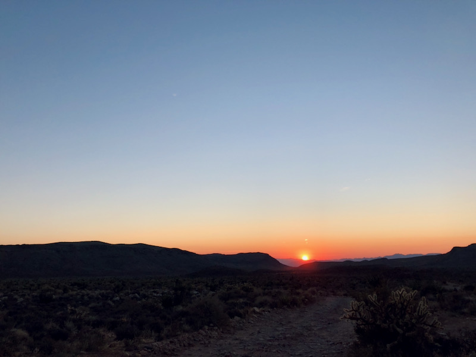
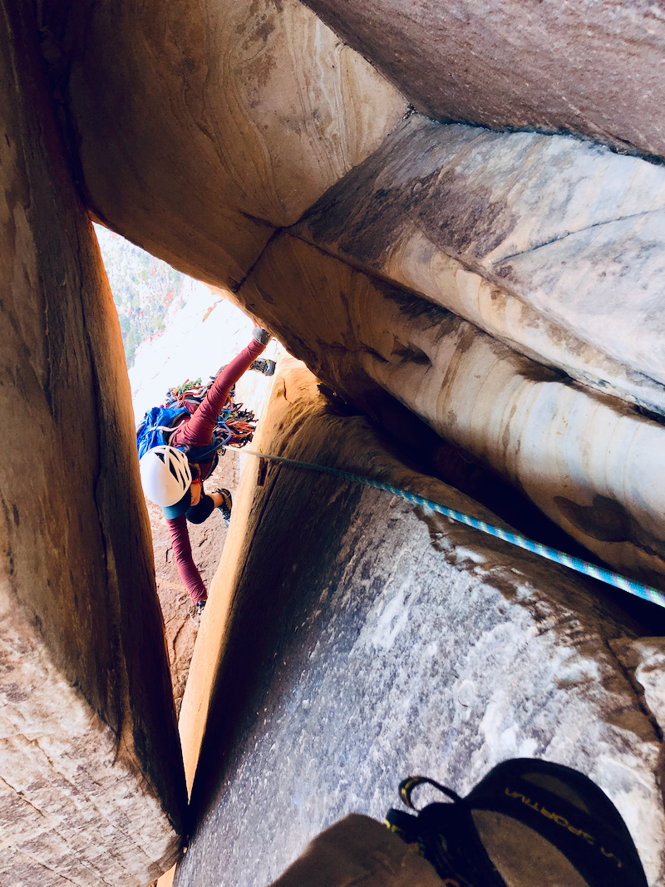
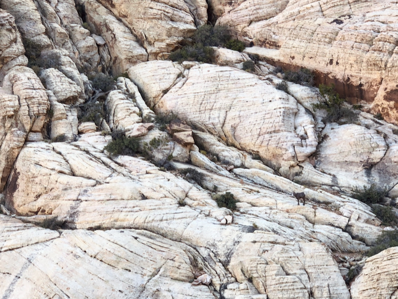

My leader starting pitch one. Pro? We don't need pro where we're going.
My leader starting pitch one. Pro? We don't need pro where we're going.
TL;DR: Stop reading this page if you (or anyone related to you) intend on suing me if you die, get hurt, horribly lost on a 20 hr day epic, and/or whatever other reason.
Longer disclaimer: Climbing is dangerous. Do your own independent research before attempting any route. Notes here are for my own use and not intended to be definitive or "safe" beta of any sort.
Some additional things about this page:
You do Frogland for the chockstone squeeze pitch. Just do it. You know you want to. Make some grunting noises, release your anger.
Being drawn...
 Watching the sun rise behind us on the approach
My leader starting pitch one. Pro? We don't need pro where we're going.
 Follower about to enter the chockstone birthing canal.
 Found a friend on the walk-off.